Weddings & celebrations
Ceremony pieces, tablescapes and bouquets, customized to your style, from vintage to modern and whimsical to refined.
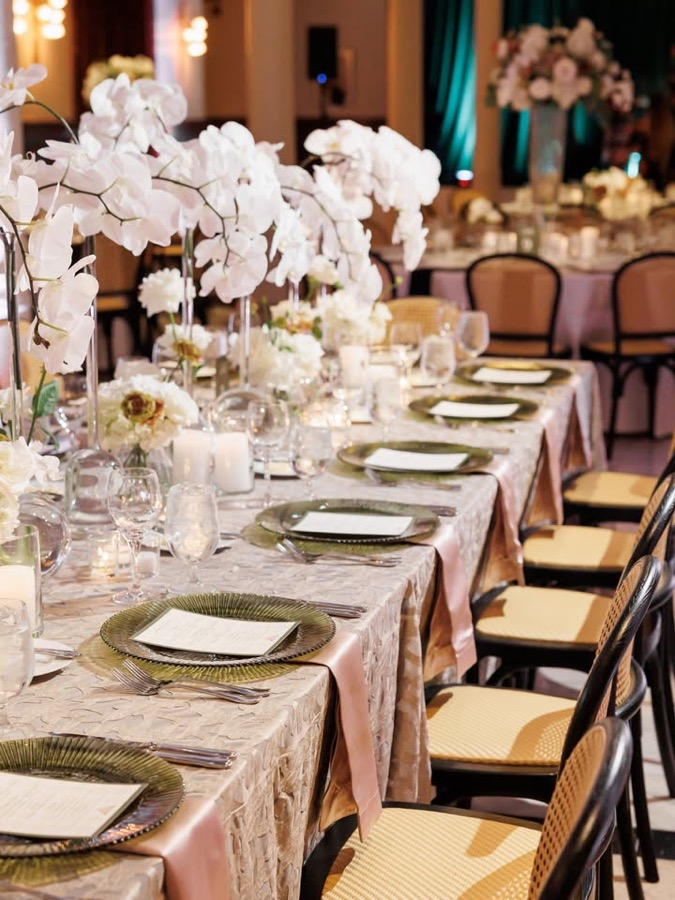
Floral and event design · Austin, TX
From gentle, romantic florals layered with candlelight to big, playful balloon installations. Weddings, corporate events and celebrations across Austin and Central Texas.
Tell us about your event See our workWhat we design
Ceremony pieces, tablescapes and bouquets, customized to your style, from vintage to modern and whimsical to refined.
Networking parties, launches and dinners with intentional, timeless decor that makes the space feel special.
Organic balloon installations that make a big impact, from a small porch birthday to a large-scale grand opening.
Our work
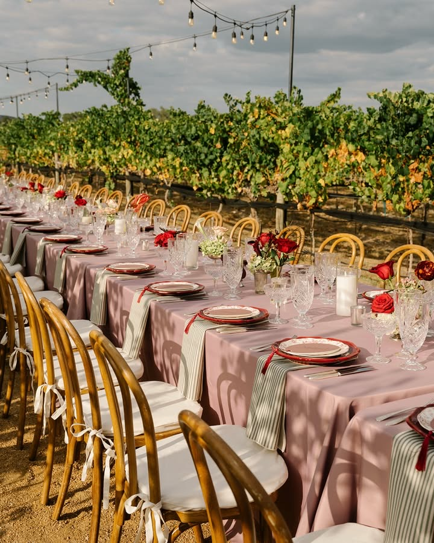
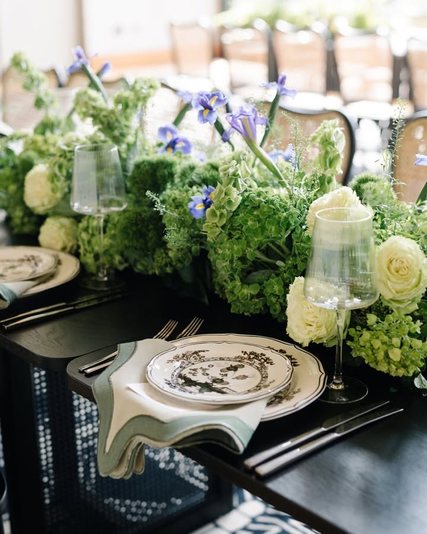
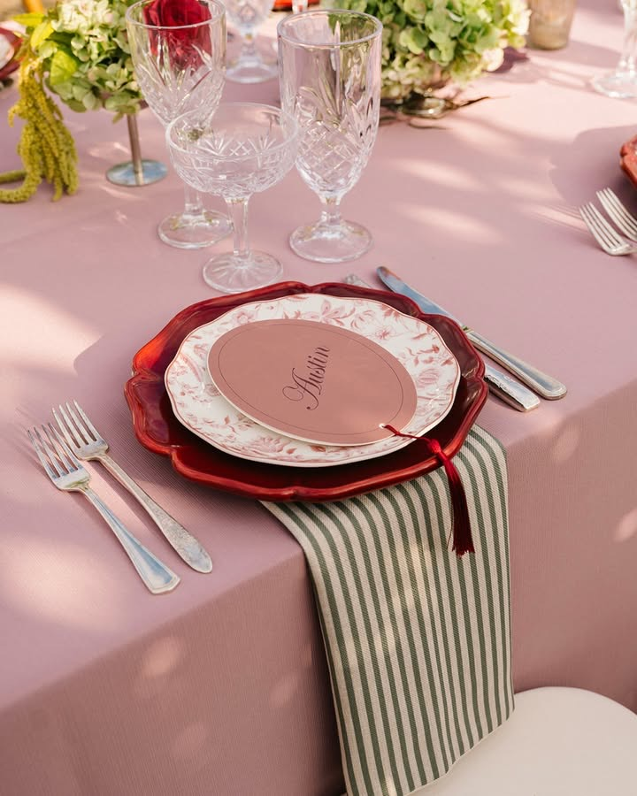
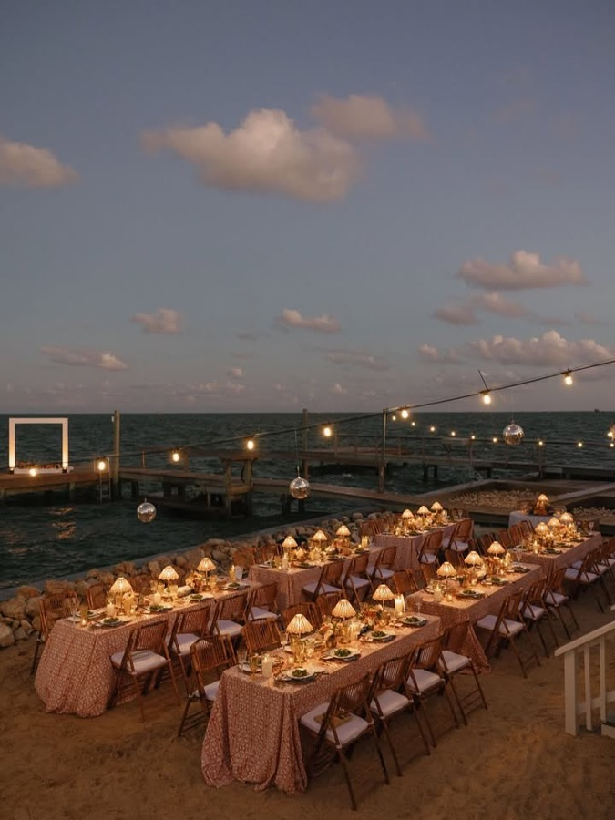
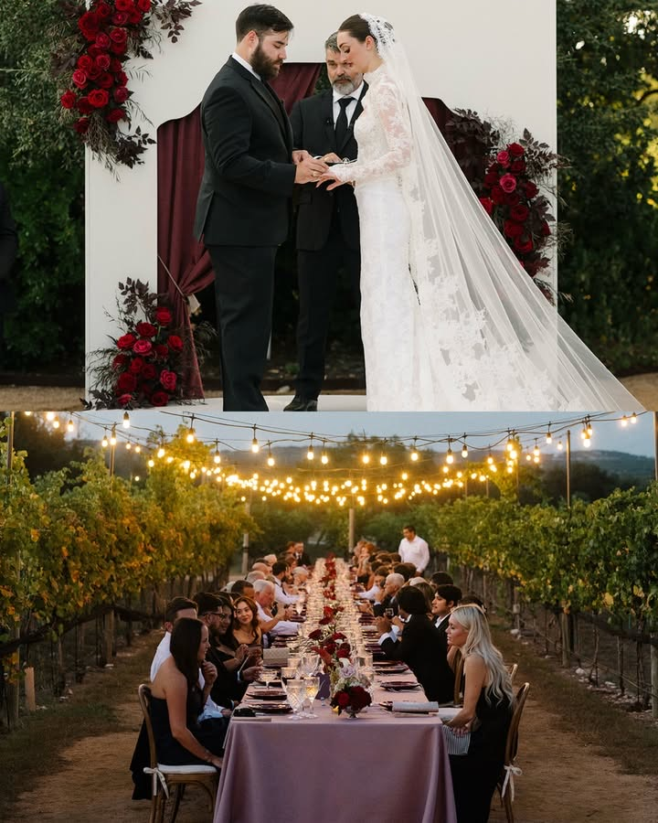
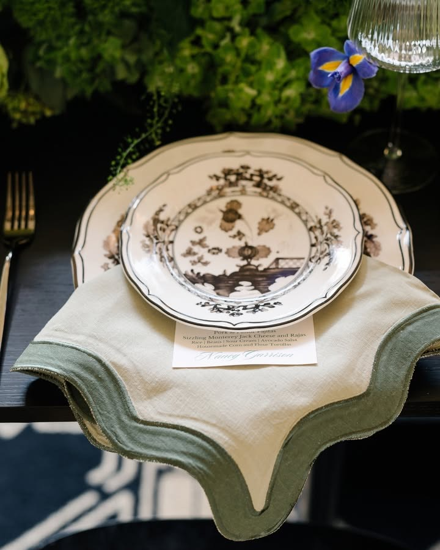
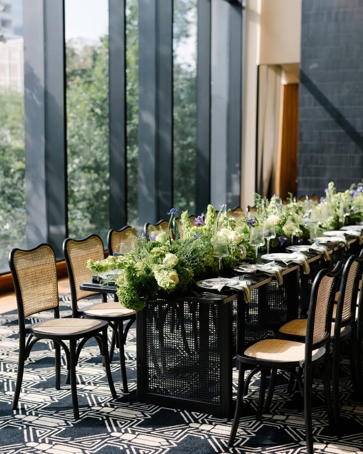
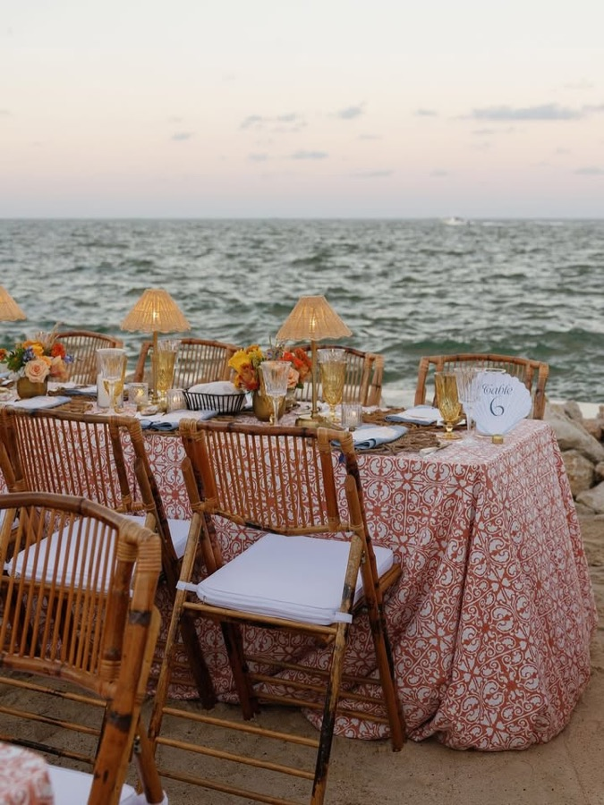
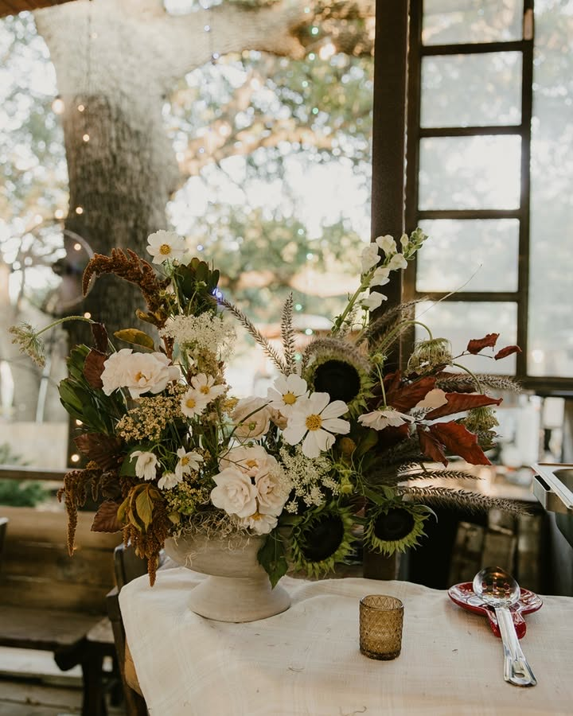
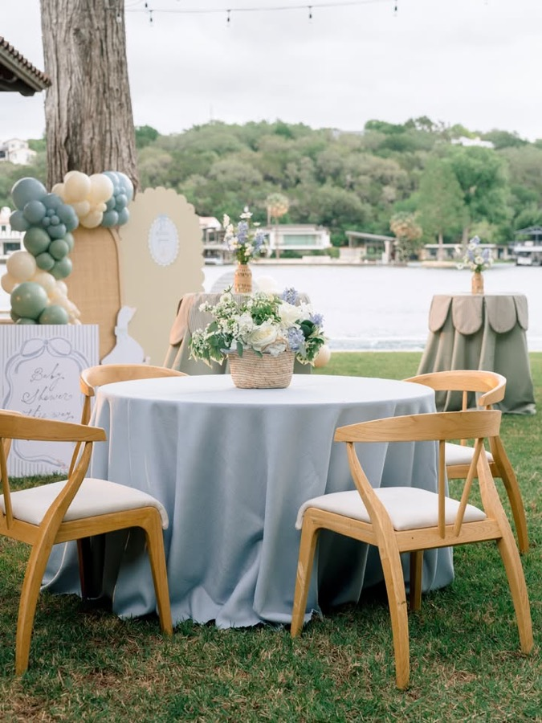
13+ years in event design
Wendee is the owner and lead designer. She started in hospitality, working with major hotel brands, then founded Lucie's Weddings & Events in 2005, where floral design became her passion.
She has worked mainly across Austin and San Antonio, and has traveled throughout Texas "and pretty much anywhere a good margarita could be found." Favorite things: giant dahlias, donuts and puppies of all ages, shapes and sizes.
Can't wait to hear about your event